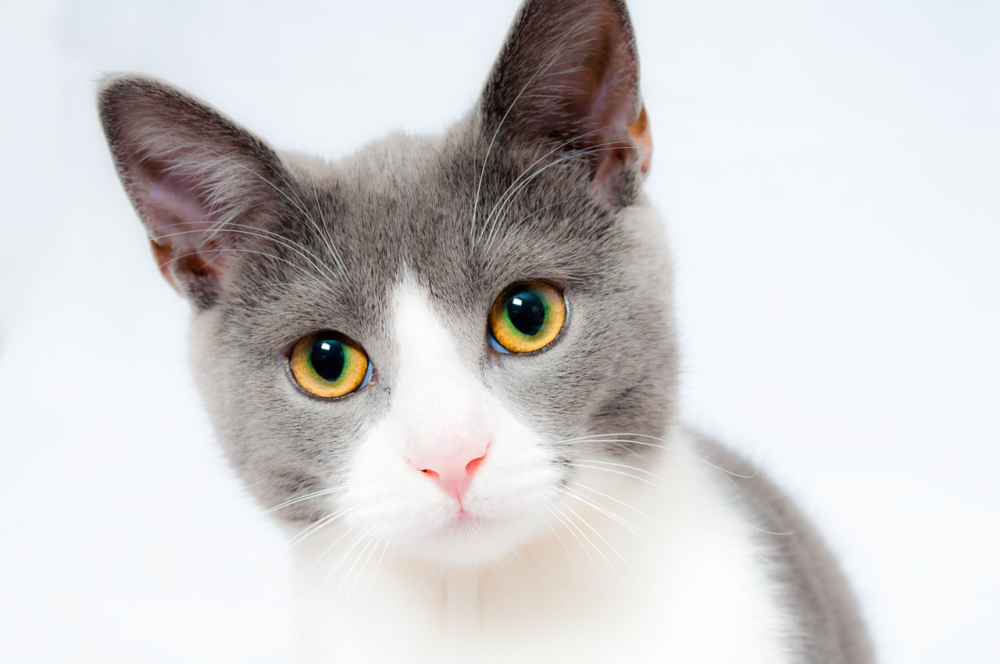
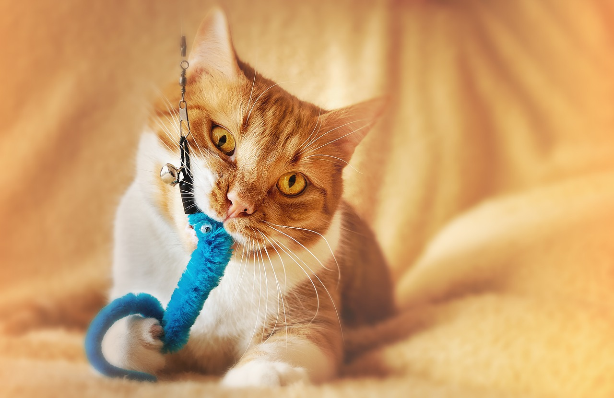
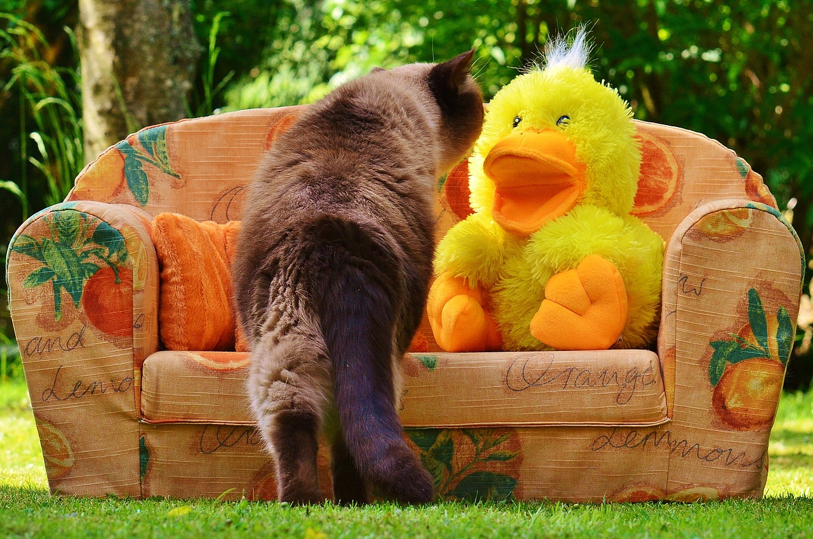
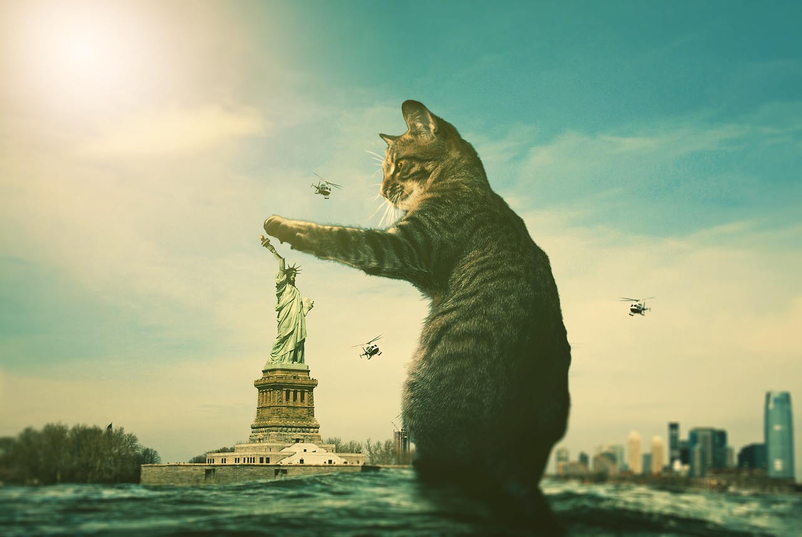

Welcome to
Cats
R' Us
About us
Welcome to cats R Us! We are a select group of individuals who made it our life purpose to have every cat have a home that once had one. We are very excited to announce the opening of our website, where we are going to post images of all cats that are up for adoption as well as cat toys and every other needs a cat will need.
Meet our recent adoptions!
- Fred

- Pickles

- Eyeball 
ADOPTION AREA
PLEASE READ Due to a high volume of unhappy adoptions we unfortunately must give a warning. While we love to have every cat adopted, some cats are born outside and will have issues being house trained, as a result, we recomment that if you are inexperienced handling highly tempermental cats we suggest adopting an indoor cat
-

Leo
Leo loves to play with any toy however at times will nap all day. He's been with us for a short time, but has already began to trust us. Perfect for amateur cat owners
-
Sprinkles
One of our youngest kittens, is very shy and hasn't shown much like for human interactions, howevere, is not violent.
- 
Quack
Found near a lake with lots of ducks, Quack loves to play outside. At times he can be quite mischevous, however, is a sweety pie overall.
- 
Godzilla
Godzilla has been with us quite some time, since our first store in New York. She has been quite a handful for workers due to her hostile upbringing, but when no one is watching, is quite curious of the world.

Shrek
Shrek is a cat with a nasty upbrining, abandoned by his previous owners, he has become scared of the world. However, just like shrek, we believe he has many unopened layers that just needs the right owner to unlayer